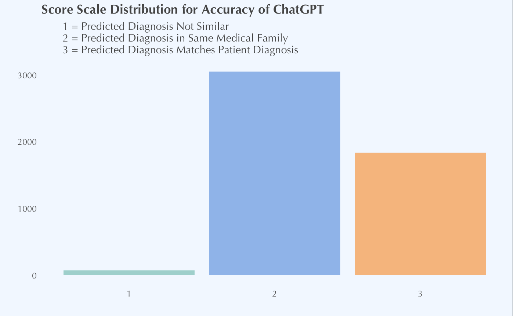
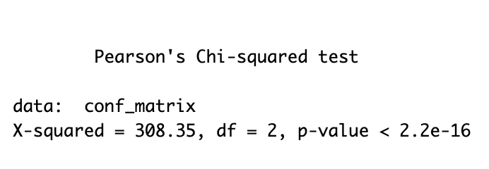
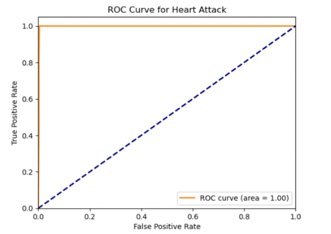
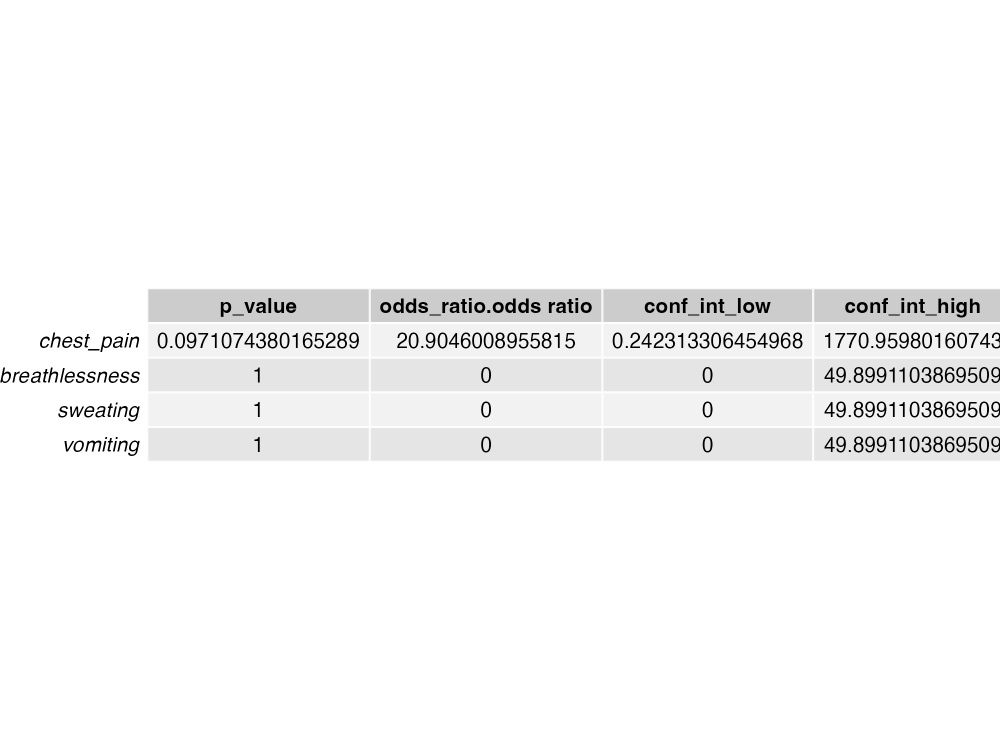

Abstract
This capstone project investigates the diagnostic accuracy of generative AI, specifically ChatGPT, in a telehealth setting. The study compares AI-generated diagnoses with those provided by human clinicians, assessing the feasibility of using AI for accurate medical diagnosis. A dataset licensed from MIT and sourced from Kaggle, containing over one hundred symptoms associated with various diagnoses, was employed. ChatGPT simulated a telehealth doctor, generating diagnostic predictions based on randomized symptom data. These predictions were then compared to actual diagnoses to evaluate accuracy.
The findings reveal that while ChatGPT demonstrated moderate accuracy in grouping symptoms within the same medical family, it achieved an overall diagnostic accuracy of only 25.15%, indicating significant limitations in delivering precise and reliable diagnoses. Traditional machine learning models, such as Decision Trees and Logistic Regression, outperformed ChatGPT with a higher accuracy of 57%, underscoring the importance of targeted, data-driven approaches for clinical diagnostics.
The study highlights the potential of generative AI to assist in preliminary diagnostic processes but emphasizes the need for further refinement and the integration of real-world clinical data to ensure its reliability. Ethical considerations, including data privacy, bias mitigation, and the necessity of human oversight, are critical for the responsible deployment of AI in healthcare. Future research should focus on enhancing AI model accuracy, developing hybrid AI-human diagnostic systems, and addressing ethical challenges to fully harness the transformative potential of AI in healthcare diagnostics.
Introduction
Generative AI is rapidly emerging as a transformative technology in the field of healthcare, with the potential to significantly enhance diagnostic processes. Unlike traditional AI models, which are typically designed to classify or predict outcomes based on existing data, generative AI models have the ability to create new data by learning patterns from vast datasets. This capability enables generative AI to analyze large volumes of patient information swiftly and identify patterns that may be challenging for human clinicians to discern. The promise of generative AI lies in its potential to deliver faster, more consistent, and potentially more accurate diagnoses.
However, the integration of generative AI into healthcare brings forth critical questions regarding its practical application in clinical settings. A key concern is the accuracy of AI-generated diagnoses compared to those made by human clinicians when presented with identical symptoms. Can generative AI achieve the high level of accuracy required for clinical use? What are its strengths and limitations in this context?
This capstone project aims to evaluate the diagnostic accuracy of generative AI, specifically ChatGPT, within a telehealth setting. By comparing AI-generated diagnoses with those provided by human clinicians, this study seeks to assess the feasibility of using AI for accurate medical diagnoses. Additionally, the research explores the broader impact of generative AI on improving diagnostic processes and patient outcomes.
To achieve these objectives, we utilized a dataset licensed from the Massachusetts Institute of Technology (MIT) and sourced from Kaggle, which includes over one hundred symptoms associated with various diagnoses. ChatGPT was employed to simulate a telehealth doctor through multiple API calls, where it generated diagnostic predictions based on randomized symptom data. These AI predictions were then compared to the actual diagnoses in the dataset to assess their accuracy.
The research is structured as follows: First, we review the current state of generative AI in healthcare, highlighting its applications, benefits, and challenges. We then detail our methodology, including data collection, model selection, and statistical analysis. The results of our study are presented next, followed by a discussion of their implications, limitations, and potential future research directions. Finally, we conclude with a summary of our findings and their significance for the future of AI in healthcare.
Through this investigation, we aim to provide valuable insights into the capabilities and limitations of generative AI in healthcare, contributing to the ongoing discussion about its role in the future of medical diagnostics.
Background
Generative AI in Healthcare
Generative AI represents a significant advancement in artificial intelligence, particularly within the healthcare sector. Unlike traditional AI models that are designed to classify or predict outcomes based on existing data, generative AI has the capability to create new, synthetic data by learning patterns from large datasets. This ability to generate data and mimic the statistical properties of training data has profound implications for healthcare, where accurate data generation and pattern recognition are crucial for improving diagnostic processes.
Current Applications of Generative AI
Generative AI is already making notable contributions to healthcare through several key applications:
Clinical Decision-Making: Generative AI assists in diagnosing diseases, predicting disease progression, triaging patients, and planning treatment. By analyzing extensive patient data, AI can identify patterns that might be missed by human clinicians, leading to more accurate and timely diagnoses.
Medical Education: AI enhances medical education by generating realistic medical scenarios for training, designing exam questions, and creating interactive learning tools. These applications improve the training of healthcare professionals and contribute to higher quality in medical education.
Clinical Documentation: AI streamlines the documentation process by summarizing patient issues, generating discharge summaries, and creating comprehensive healthcare reports. This reduces the administrative burden on healthcare providers, allowing them to focus more on patient care.
Challenges of Generative AI in Healthcare
Despite its potential, the adoption of generative AI in healthcare presents several challenges:
Bias and Variability: AI models can exhibit biases based on the training data, which can affect diagnosis and treatment accuracy. Variability in AI performance across different demographic groups is a significant concern, as it can lead to disparities in healthcare delivery.
Ethical and Privacy Issues: The use of AI raises ethical questions related to data privacy, informed consent, and the potential for generating inaccurate or biased information. Ensuring that AI applications in healthcare are both ethical and trustworthy is critical to their success.
Need for Human Oversight: While AI can significantly aid in diagnostics, continuous human oversight is necessary to verify AI outputs and ensure reliability. Healthcare professionals must be involved in monitoring AI systems and making critical decisions to maintain trust and efficacy in AI-assisted healthcare.
Ethical Considerations and Bias Mitigation
The ethical implications of using AI in healthcare are significant, and addressing these concerns is essential for building reliable and fair AI systems:
Ensuring Data Quality: Comprehensive and representative datasets are crucial to minimizing biases and improving the reliability of AI models. Diverse data sources help create AI systems that are more accurate and applicable to a broader range of patient populations.
Detecting and Quantifying Biases: Implementing techniques to identify and quantify biases in AI models is essential for understanding their impact and developing strategies to mitigate them. This is critical for creating AI systems that provide equitable healthcare.
Human Oversight: Continuous human involvement is essential to verify AI outputs, make critical decisions, and maintain trust in AI systems. Healthcare professionals must remain engaged in the diagnostic process, ensuring that AI enhances rather than replaces human judgment.
Limitations of Synthetic Data in Healthcare AI Models
While synthetic data offers benefits such as privacy compliance and scalability, it also presents challenges that must be addressed for effective AI model development:
Data Leakage: Synthetic data may inadvertently incorporate characteristics from the original training data, leading to overly optimistic performance evaluations. This can create a false sense of accuracy and reliability in AI models.
Lack of Diversity: Synthetic data may not fully capture the diversity of real patient populations, which can affect the generalizability and reliability of AI models. Ensuring that synthetic data represents a wide range of demographic and clinical scenarios is crucial.
Inherent Biases: Any biases present in the original training data can be reflected in the synthetic data, potentially exacerbating existing disparities in healthcare. Addressing these biases is essential for creating fair and equitable AI systems.
Exploratory Data Analysis
Dataset Overview
The dataset utilized in this study was sourced from Kaggle and licensed from the Massachusetts Institute of Technology (MIT). It contains over one hundred symptoms associated with various diagnoses, providing a comprehensive foundation for evaluating the diagnostic accuracy of generative AI models like ChatGPT. More information is provided in the Methods section.

Summary Statistics
To begin the analysis, summary statistics were calculated for the key variables in the dataset.
- Common Symptoms: Fatigue and vomiting are the most prevalent, each occurring in about 39% of cases, followed by high fever at 28%.
- Rare Symptoms: Nodal skin eruptions and muscle wasting are much less common, present in only 2% of cases.
- Symptom Distribution: Most symptoms, including itching and skin rash, are rarely observed, with the majority of cases showing these symptoms as absent. This highlights the importance of focusing on the more frequent symptoms in the analysis.
Missing Data Analysis
Addressing missing data is crucial in any dataset as it can significantly affect the analysis outcomes. An initial inspection revealed that this synthetic dataset contains no missing data, allowing for more straightforward analysis.
Initial Visualizations
To further explore the dataset, initial visualizations were created to highlight the relationships between key variables. During this exploration, we observed that the dataset was designed with an equal distribution of diagnoses, each having 121 instances, except for “Fungal Infection,” which surprisingly had 122 occurrences.

When analyzing the most frequently occurring symptoms, we found that the top 10 included fatigue, vomiting, high fever, loss of appetite, nausea, headache, abdominal pain, yellowish skin, yellowing of eyes, and chills. Fatigue and vomiting were the most common, with 1,949 and 1,931 occurrences respectively, appearing in nearly half of the records in the dataset.

This analysis prompted the question: where do these symptoms lead in terms of medical families and diagnoses? To explore this, a Sankey diagram was created to visualize the flow. The diagram shows that vomiting is most closely tied to gastrointestinal issues and infections, while fatigue is connected to a broader range of conditions, including metabolic disorders and heart problems. Both symptoms are also linked to neurological and respiratory issues, indicating that they are common in many different illnesses and serve as important diagnostic clues. Specific diseases like hepatitis, jaundice, and diabetes are highlighted, showing how these symptoms play a role in those diagnoses.
A brief note: the medical families were determined by querying ChatGPT, and while informative, may not be 100% accurate in their grouping.
Figure 4: Sankey flow diagram illustrating how the most common symptoms lead to specific diagnoses.
Correlation Analysis
To understand the relationships between symptoms and their associated diagnoses, a correlation matrix was constructed and visualized with a heatmap. This matrix shows the Pearson correlation coefficients between the top 10 most frequent symptoms.


The correlation matrix reveals some clear patterns: yellowing of the eyes and loss of appetite (0.7680), yellowish skin and abdominal pain (0.7336), and yellowish skin and yellowing of the eyes (0.7158) are strongly linked, suggesting these symptoms often occur together in conditions like jaundice. Moderate correlations, such as those between nausea and vomiting (0.5252) and between loss of appetite and abdominal pain (0.4865), are common in gastrointestinal issues. On the other hand, symptoms like headache and abdominal pain (-0.1540) show a weak or negative relationship, indicating they rarely appear together, which could suggest different underlying causes. These correlations are critical for understanding which symptoms might co-occur and potentially lead to specific diagnoses.
Conclusion and Segue to Methods
In summary, the exploratory data analysis has provided valuable insights into the most common symptoms and their relationships with various diagnoses. The analysis highlighted key patterns in symptom occurrence, including strong correlations among symptoms commonly associated with specific conditions like jaundice and gastrointestinal disorders. Additionally, the visualizations offered a clear view of how symptoms like fatigue and vomiting are distributed across different medical categories.
These findings underscore the importance of a detailed and structured approach in evaluating the diagnostic accuracy of generative AI models. To build on this exploratory analysis, we now turn to the methodology, where we will outline the steps taken to rigorously assess the performance of these models, including data preprocessing, model selection, and evaluation metrics. This systematic approach will ensure that the insights derived from the data are translated into meaningful diagnostic accuracy assessments.
Methods
Dataset Selection
In this study, we used a dataset obtained from Kaggle, licensed by the Massachusetts Institute of Technology (MIT). The dataset includes over one hundred symptoms linked to various diagnoses, making it well-suited for assessing the diagnostic accuracy of generative AI models. The data was divided into training and testing sets, with each set containing 132 symptom columns and one prognosis column. Specifically, 80% of the data was allocated for training, and the remaining 20% was reserved for testing. This division was intended to ensure a thorough evaluation, allowing the model’s generalization capabilities to be accurately measured by testing on previously unseen data.
API Development
To simulate the role of a telehealth doctor, we employed ChatGPT, a generative AI model, through a series of API calls. Each row in our dataset was processed by presenting ChatGPT with a randomized sequence of symptoms that tested positive. The AI was then prompted to provide a diagnostic prediction based on these symptoms. This process allowed us to collect predictions that were later compared against the actual diagnoses in the dataset.
Data Engineering
The data engineering process for this study involved several key steps to ensure the quality and reliability of the dataset:
Data Collection
- Synthetic Data from Kaggle: The foundational dataset, containing symptoms and prognoses, was sourced from Kaggle’s “Disease Prediction Using Machine Learning” competition.
- ChatGPT API Calls: Additional data was generated using the ChatGPT API by requesting diagnostic predictions based on the provided symptoms. This was crucial for evaluating the AI’s predictive accuracy. The “gpt-3.5-turbo” model from OpenAI was chosen for its efficiency and advanced capabilities, making it ideal for handling complex language tasks with precision.

Data Augmentation
- Generative AI Impact Assessment: To evaluate the impact of generative AI on diagnostic accuracy, the original dataset’s accuracy was compared with the predictions generated by ChatGPT.
- Initial Diagnosis Call: The first API call instructed the AI to act as a doctor with the prompt: “Pretend you are a doctor. Patient presents with symptoms: {symptoms}. Predict the primary diagnosis concisely using ten words or less.”
- Accuracy Evaluation: The predicted prognosis was evaluated using a custom function
get_ratingthat sent the prognosis and predicted values to the GPT-4 API, receiving a rating based on match accuracy. The rating scale ranged from 1 (No match) to 3 (Perfect match). - Medical Family Determination: Specific prompts were used to categorize the original and AI-generated prognoses into their respective medical “families.”
Data Cleaning
- Inconsistency Resolution: Inconsistencies in the data were identified and corrected to ensure accurate symptom-disease relationships.
- Symptom Randomization: To reduce bias, the order of symptoms presented to ChatGPT was randomized during API calls, ensuring the AI’s predictions were not influenced by symptom order.
- Data Storage: We organized the dataset and associated resources in a GitHub repository to ensure efficient version control and centralized access. This repository serves as a comprehensive resource for data management and future reference.
Repository Structure:
.github: Contains GitHub-specific configurations.Data: Houses both raw and processed datasets.Data_Engineering: Includes scripts and resources for data engineering tasks.Documentation: Contains project documentation, reports, and written materials.Machine_Learning: Stores machine learning models, training scripts, and evaluation metrics.Statistics: Includes statistical modeling scripts and evaluation metrics.README.md: Provides an overview of the project, including the research question, project description, and links to additional resources.
Statistical Analysis
To evaluate the performance of ChatGPT’s diagnostic predictions, we employed various statistical methods:
- Descriptive Statistics: We calculated metrics such as mean, median, standard deviation, and variance to summarize the accuracy scores and provide an overview of the AI’s performance.
- Confusion Matrix: A confusion matrix was used to visualize the AI model’s performance by showing the counts of true positives, true negatives, false positives, and false negatives. This provided insights into the accuracy and errors of the AI model.
- Accuracy Metrics: Precision, recall, and F1 scores were calculated to evaluate the AI’s performance across different diagnostic categories, offering a more detailed understanding of its accuracy.
- Chi-Square Test: To determine whether there was a significant difference between the expected and observed frequencies of diagnostic accuracy categories, we conducted a chi-square test, helping to assess the consistency of the AI’s predictions.
- Fisher’s Exact Test: In cases where sample sizes were small and the assumptions for the chi-square test might not hold, Fisher’s Exact Test was used to provide a more accurate measure of the significance of the association between the AI’s predictions and actual diagnoses.
Machine Learning Model Development
To provide a comparative analysis, we developed traditional machine learning models using the same dataset, allowing us to compare their performance against ChatGPT’s:
Model Development
- Decision Trees: Decision Trees were selected for their ability to handle complex datasets with hierarchical relationships. This model helps visualize the decision-making process and understand how specific symptoms influence diagnosis.
- Logistic Regression: Logistic Regression was used for its strength in binary classification tasks, providing probabilistic outputs that indicate the likelihood of a diagnosis based on symptoms.
Model Evaluation
The machine learning models were evaluated using metrics such as accuracy, precision, recall, and F1 scores, providing a basis for comparing their performance with that of the generative AI model.
Results
Descriptive Statistics
Initially, a quick text match analysis was conducted to compare the predicted prognosis with the original prognosis. The results showed that the majority of diagnoses did not match, with ChatGPT demonstrating an overall accuracy of 25.15%. This means the AI correctly identified the diagnosis in about one out of every four cases. While this indicates some diagnostic capability, it also highlights significant gaps in the model’s reliability for clinical use.

However, after running another API call to compare the original prognosis with the predicted one and rating their similarity on a scale from 1 to 3, the results showed a shift. The matches were categorized into three groups: no match, same medical family, and perfect match. The analysis revealed that most predictions fell into the “same medical family” category. Descriptive statistics showed a mean match score of 2.2 out of 3, indicating that while ChatGPT often identified diagnoses within the correct medical family, it frequently lacked precision in delivering accurate diagnoses, underscoring its limitations in clinical settings.


Confusion Matrix Analysis
The confusion matrix provided a detailed breakdown of ChatGPT’s performance across different diagnostic categories:
- Rating 1 (No Match): ChatGPT rarely identified cases with no match correctly, resulting in a low true positive rate. This indicates that the AI often failed to recognize when a set of symptoms did not correspond to the predicted diagnosis, a critical concern for clinical accuracy.
- Rating 2 (Same Medical Family): The AI showed moderate performance in identifying related conditions, but the high number of false positives suggests frequent misclassification of unrelated conditions as related. This reflects a need for better contextual understanding of symptoms.
- Rating 3 (Perfect Match): While ChatGPT performed better in this category, correctly identifying perfect matches with higher frequency, it also exhibited a tendency to over-predict perfect matches, leading to a significant number of false positives. This over-prediction could be misleading in a clinical setting where precision is essential.

Precision, Recall, and F1-Score Evaluation
To further evaluate ChatGPT’s performance, we calculated precision, recall, and F1-scores for each diagnostic category:
- Rating 1 (No Match): The AI’s precision (0.0008), recall (0.0135), and F1-score (0.0015) were extremely low, indicating a poor ability to correctly identify no matches.
- Rating 2 (Same Medical Family): The AI demonstrated moderate precision (0.4247) and recall (0.1737), but the overall F1-score (0.2466) revealed significant room for improvement.
- Rating 3 (Perfect Match): The AI showed better performance with a precision of 0.5745, recall of 0.3903, and F1-score of 0.4648. However, these metrics still indicate the need for enhancements to achieve clinical reliability.

Chi-Square Test for Independence
The Chi-Square test results (X-squared = 308.35, p-value < 2.2e-16) showed a statistically significant association between ChatGPT’s predictions and actual outcomes. This suggests that while the model’s predictions are not random, there is considerable room for improving its accuracy and consistency across different match types.

Comparative Performance of Machine Learning Models
To understand the challenges of creating accurate predictions based on a list of symptoms, we developed our own in-house machine learning models. This not only allowed us to identify potential pain points in diagnostic accuracy but also provided a basis for comparison between traditional machine learning methods and emerging generative AI, such as ChatGPT.
In this project, we employed both Decision Tree models and Logistic Regression to predict diagnoses based on a set of symptoms. Both models achieved an accuracy of 57%, which was significantly better than the 43% accuracy demonstrated by generative AI methods like ChatGPT.
Model Selection:
Decision Trees: This model was chosen for its ability to handle complex datasets with hierarchical relationships. Decision Trees work by splitting data into branches based on feature values, capturing intricate interactions between symptoms and diagnoses. The model’s interpretability allows us to visualize decision-making processes, making it easier to understand the relationships between symptoms and diagnoses.
Logistic Regression: Well-suited for binary classification tasks, Logistic Regression provides probabilistic outputs that indicate the likelihood of a diagnosis based on symptoms. It performs well when the relationship between predictors (symptoms) and the target variable (diagnosis) can be approximated by a linear decision boundary. Its simplicity and efficiency make it an ideal choice for tasks requiring interpretability and computational efficiency.
Model Tuning and Accuracy:
Initially, we fit the models using all available symptoms to predict diagnoses. However, this led to overfitting, where the models performed well on training data but struggled to generalize to new data. To address this, we refined the models by focusing on the 10 most common symptoms. This adjustment aimed to balance model complexity and improve generalizability.
After refinement, both Decision Trees and Logistic Regression maintained a stable accuracy of 57%. This performance was notably superior to that of generative AI methods like ChatGPT, which had an accuracy of roughly 43%. The difference in performance highlights the specialized nature of our machine learning models, which are more tailored to specific classification tasks, unlike generative AI models that are designed for a broad range of language tasks.

Heart Attack Prediction: A Case Study
In our analysis, we observed that ChatGPT achieved a 100% accuracy rate for diagnosing heart attacks. To further explore this, we developed a logistic regression model specifically for heart attack diagnosis, using the top ten most common symptoms associated with heart attacks as predictors (X) and the corresponding diagnosis as the target (y). Remarkably, our logistic regression model also achieved a 100% accuracy rate, matching the performance of ChatGPT.
This finding underscores the effectiveness of both machine learning models and generative AI in diagnosing conditions characterized by a well-defined set of specific symptoms. It highlights the potential for targeted symptom analysis to significantly enhance diagnostic accuracy in specific medical scenarios, particularly for acute conditions like heart attacks.

To delve deeper into the influence of specific symptoms on ChatGPT’s diagnostic accuracy, particularly for heart attack cases, we conducted a Fisher’s Exact Test. The analysis provided the following insights:
- Chest Pain: The test suggested a potential association with perfect match predictions, though the result was not statistically significant (p-value = 0.09711).
- Breathlessness, Sweating, Vomiting: These symptoms did not show any significant association with the AI model’s prediction accuracy (p-values = 1), indicating that the model might not be effectively using these symptoms to improve diagnostic accuracy.


Addressing Discrepancies
The difference in accuracy between ChatGPT (25%) and traditional machine learning models (57%) can be attributed to the specialized nature of the problem. Traditional models, which focus on specific symptom features and undergo targeted refinement, tend to perform better in specialized tasks like medical diagnosis. This points to the need for continued development and specialization in AI models to enhance their utility in clinical settings.
Conclusion
This study aimed to evaluate the diagnostic accuracy of generative AI, specifically ChatGPT, within a telehealth setting. The findings reveal both the potential and current limitations of using AI for medical diagnoses.
Key Findings
Diagnostic Performance: ChatGPT demonstrated some ability to group symptoms and provide preliminary diagnoses, achieving a mean match score of 2.2. However, the AI often fell short in delivering precise and accurate diagnoses, achieving an overall accuracy of 25.15%. This indicates that while generative AI can assist in preliminary diagnostic processes, it requires significant refinement before it can meet clinical standards.
Traditional Models: The performance of traditional machine learning models, such as Decision Trees and Logistic Regression, highlighted their strengths in classification tasks. These models outperformed ChatGPT with an accuracy of 57%, emphasizing the importance of targeted, data-driven approaches in achieving reliable diagnostic outcomes. This discrepancy suggests that while generative AI has broader capabilities, it may not yet be optimized for specific, nuanced tasks like medical diagnosis.
Implications for Clinical Use
Integration of Real-World Data: The study underscores the critical need for the integration of real-world clinical data to validate AI models. Synthetic data, while useful for initial testing, may not fully capture the complexity and variability of real patient scenarios, potentially leading to an overestimation of AI performance. Future studies should prioritize the use of diverse and representative clinical datasets to ensure the generalizability and robustness of AI models.
Human Oversight: The study highlights the importance of human oversight in AI-assisted diagnostics. The potential for AI to over-predict or misclassify conditions necessitates continuous human involvement to ensure patient safety and care quality. This collaboration between AI and human clinicians is crucial for enhancing the reliability of diagnostic processes.
Ethical Considerations
- Data Privacy and Bias Mitigation: Ethical considerations, such as data privacy, informed consent, and bias mitigation, are critical in the implementation of AI in healthcare. The risk of AI models reinforcing or amplifying existing biases is a major concern. To address this, it is essential to establish strong ethical frameworks that promote fairness, transparency, and trust in AI diagnostics. Given the use of synthetic data in this study, mitigating bias was a top priority. We applied methods like symptom randomization to minimize potential biases. Additionally, we adhered to stringent data privacy protocols, ensuring that all synthetic data used met privacy standards.
Future Research Directions
Future research will focus on integrating real-world clinical data, addressing challenges such as data variability and privacy concerns. To navigate these obstacles, we plan to collaborate with healthcare providers to access diverse and representative datasets, ensuring that AI models are trained and tested in environments that closely resemble real-world conditions.
Looking ahead, research should concentrate on the following key areas:
- Integration of Real-World Data: Validating AI models with diverse clinical data is crucial for ensuring their applicability and accuracy in practical healthcare settings.
- Development of Hybrid Models: By combining AI’s computational power with the nuanced reasoning of human clinicians, we can achieve more accurate and reliable diagnostic outcomes. This hybrid approach aims to harness the strengths of both AI and human expertise.
- Ethical Oversight: Implementing robust ethical frameworks to address data privacy, informed consent, and bias mitigation is essential for building trust and ensuring that AI benefits all patients equitably.
Additionally, future research may explore the use of tools like Google Trends to analyze common symptom combinations and test AI models with real symptom data, incorporating variables such as age, weight, and medical history.
Business Applications of AI in Healthcare Diagnostics
Furthermore, the integration of artificial intelligence (AI) into healthcare diagnostics presents several pivotal business opportunities:
- Healthcare Accessibility
- Expanding Reach: AI-powered diagnostic tools can be deployed in remote and underserved regions, thereby extending essential healthcare services to areas with limited access. This capability significantly enhances healthcare delivery in regions that are otherwise challenging to service.
- Enhancing Telehealth: AI facilitates real-time diagnostics during virtual consultations, thereby augmenting the effectiveness and accessibility of telehealth services. This integration ensures that remote consultations are as reliable and informative as in-person visits.
- Operational Efficiency
- Reducing Workload: AI systems can automate preliminary diagnostic tasks, allowing healthcare providers to concentrate on more complex cases. This automation not only increases the number of patients that can be seen but also optimizes the allocation of healthcare resources.
- Streamlining Workflows: The integration of AI with electronic health records (EHR) systems can automate documentation processes, thereby reducing administrative burdens. This streamlining enhances both operational efficiency and the accuracy of medical records.
- Cost Reduction and Revenue Growth
- Lower Costs: By minimizing the need for expensive diagnostic tests, AI diagnostics can result in substantial cost savings for both healthcare providers and patients. This reduction in costs can enhance the overall financial efficiency of healthcare delivery.
- Revenue Optimization: Increased efficiency and diagnostic accuracy can lead to a higher patient throughput, thereby boosting revenue for healthcare providers. Improved operational effectiveness translates to financial growth and sustainability.
Final Thoughts
In conclusion, generative AI holds significant potential for transforming healthcare diagnostics. However, realizing this potential will require continuous refinement, ethical vigilance, and collaboration between AI developers and healthcare professionals. By addressing these challenges, we can enhance the reliability and accuracy of AI in healthcare, ultimately improving patient outcomes and the efficiency of healthcare delivery.
References
- Moulaei K. et al. (2024). Generative artificial intelligence in healthcare: A scoping review on benefits, challenges, and applications. International Journal of Medical Informatics, 188, 105474. https://doi.org/10.1016/j.ijmedinf.2024.105474
- Pathak, A. (2018, October 22). Understanding Confusion Matrix. Towards Data Science. https://towardsdatascience.com/understanding-confusion-matrix-a9ad42dcfd62
- Temsah M. H. et al. (2024). Transforming virtual healthcare: The potentials of ChatGPT-4omni in telemedicine. Cureus, 16(5), e61377. https://doi.org/10.7759/cureus.61377
- Talby, D. (2023, May 26). The dangers of using synthetic patient data to build healthcare AI models. Forbes. Retrieved from https://www.forbes.com/sites/forbestechcouncil/2023/05/26/the-dangers-of-using-synthetic-patient-data-to-build-healthcare-ai-models/
- Uptech Team. (n.d.). Generative AI in healthcare [Diagram]. Retrieved August 5, 2024, from https://www.uptech.team/blog/generative-ai-in-healthcare
Appendix
Appendix: List of Figures
Figure 1: A screenshot of the raw data prior to the Data Engineering process.
Figure 2: Count of each Diagnosis Present.
Figure 3: Top 10 Symptoms Present in Diagnoses.
Figure 4: Sankey flow diagram illustrating how the most common symptoms lead to specific diagnoses.
Figure 5: A Correlation Heatmap of the Top 10 Symptoms.
Figure 6: Correlation Matrix of Selected Symptoms.
- Figure 7: Flowchart showing steps from dataset selection to diagnosis estimation using API calls.
Figure 8: A visual flow chart illustrating the steps taken to further augment our data.
Figure 9: API Results: Majority of Diagnoses Did Not Match After ChatGPT Simulated a Doctor’s Diagnosis Based on Symptoms Text Match.
Figure 10: Summary statistics of Scale Match.
Figure 11: Distribution of ChatGPT’s Prognosis Match Scores on a 1-3 Scale (Original vs. Predicted).
Figure 12: Confusion Matrix Comparing ChatGPT Prognosis with Original Prognosis.
Figure 13: Precision Recall and F1-Score Evaluation.
Figure 14: Pearson’s Chi-squared test output.
Figure 15: A confusion matrix visualizing the distribution of diagnoses in our Logistic Regression model. Anything outside the diagonal line from top left to bottom right represents misdiagnosed cases, illustrating the challenges in achieving perfect accuracy.
- Figure 16: ROC curve illustrating the 100% accuracy rate achieved by the logistic regression model in diagnosing heart attacks.
- Figure 17: Fisher’s Exact Test on Assessing the Accuracy of Symptoms in Predicting Heart Attacks
- Figure 18: Fisher’s Exact Test Results
Appendix: Supplemental Figures
1. How Diagnoses were grouped into Medical Families

2. The Decision Tree used for Machine Learning

3. Average Accuracy Score By Prognosis

4. Top 5 Symptoms Associated With Heart Attacks

5. Number of Symptoms per Prognosis